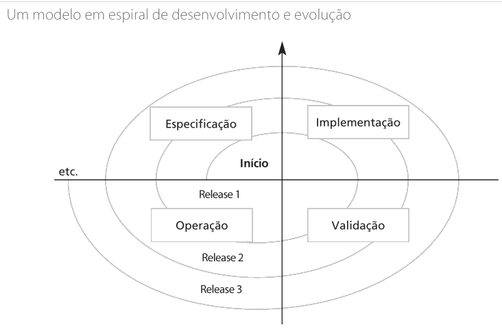
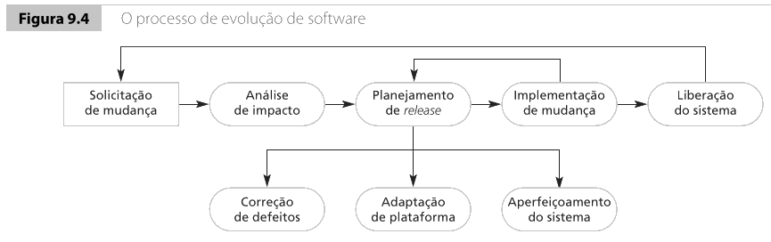
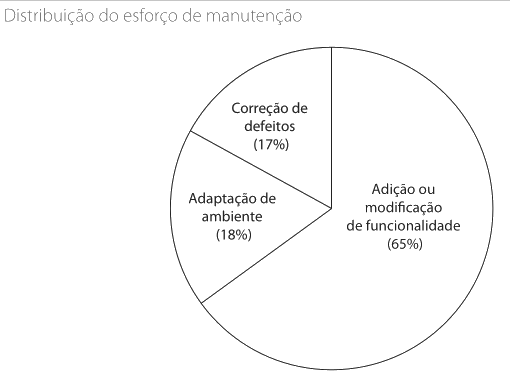
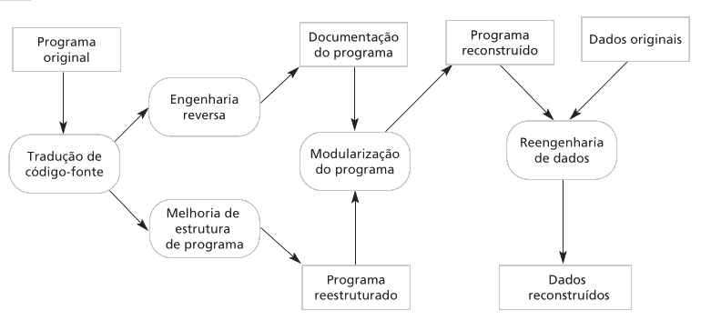
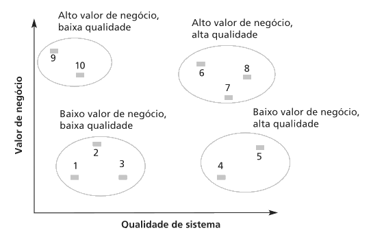

Engenharia de Software
Evolução, Manutenção e Refatoração de Software
Professor: Gabriel Soares Baptista
Por que essa aula importa?
Entregar um sistema não encerra o trabalho de engenharia de software.
Depois da entrega, o sistema entra em contato com usuários, dados, regras e integrações reais.
O problema muda: agora a equipe precisa manter o software útil apesar das mudanças no ambiente.
Ideia central do Sommerville
Segundo Sommerville, desenvolvimento e evolução fazem parte do mesmo ciclo de vida.
Um sistema profissional raramente é construído, entregue e abandonado.
Ele continua sendo modificado enquanto ainda tiver valor para a organização.
Reflita
Se um sistema acadêmico foi entregue funcionando em 2024, ele continuará adequado em 2026 se mudarem calendário, regras de matrícula, autenticação e integrações externas?
Provavelmente não. Mesmo correto, o sistema pode ficar progressivamente menos útil se não acompanhar o ambiente.
Software útil precisa mudar
Manutenção não é apenas correção de bugs.
Em sistemas reais, manutenção inclui adaptação a novos ambientes, novos requisitos, melhoria de estrutura e preparação para mudanças futuras.
Como sistemas de software são ativos críticos, preservar seu valor consome grande parte do orçamento de TI.
Evolução em espiral

O sistema passa por especificação, implementação, validação e operação várias vezes, release após release.
O ambiente força a evolução
A mudança pode vir de:
- novas regras de negócio
- mudanças legais ou regulatórias
- defeitos encontrados em operação
- atualização de sistema operacional, banco ou hardware
- integração com outros sistemas
- novas expectativas dos usuários
- pressão competitiva do mercado
Exemplos de ambiente mudando
Sistema de biblioteca:
- renovação pelo aplicativo
- nova regra de multa
- login institucional único
- relatório para sistema nacional
Sistema de vendas:
- API de pagamento muda autenticação, endpoint ou contrato de resposta
O sistema original não era inútil. O ambiente continuou se movendo.
Cuidado importante
Um sistema pode ficar obsoleto sem ter um único bug novo. Basta que o mundo ao redor dele mude e ele não acompanhe essa mudança.
Do desenvolvimento para a evolução
Separar rigidamente desenvolvimento e manutenção pode esconder o custo real da vida do sistema.
Economizar na manutenibilidade durante o desenvolvimento costuma cobrar juros depois.
Em produção, a equipe precisa entender código existente, avaliar impactos, preservar dados reais, evitar regressões e negociar mudanças com usuários reais.
Evolução, serviço e fim gradual
| Fase |
Ideia |
| Desenvolvimento inicial |
O sistema é criado. |
| Evolução |
Mudanças significativas ainda são feitas. |
| Em serviço |
Apenas mudanças pequenas e essenciais são aceitas. |
| Interrupção gradual |
O sistema ainda pode ser usado, mas deixa de receber mudanças relevantes. |
Uso contínuo não significa evolução saudável.
Exemplo: evolução ou serviço?
Folha de pagamento:
- recebe ajustes anuais de regras, relatórios e integrações
- ainda está em evolução
Consulta histórica:
- ainda é necessária
- quase ninguém quer adicionar funcionalidade
- provavelmente está apenas em serviço
Processo de evolução
Toda evolução começa com uma proposta de mudança.
Ela pode vir de bug, novo requisito, necessidade operacional ou melhoria sugerida pela equipe.

Perguntas antes de mudar
Antes de implementar, a equipe deve perguntar:
- o que precisa mudar?
- que partes do sistema serão afetadas?
- quanto custará implementar e testar?
- em qual release a mudança deve entrar?
Mudança profissional começa por análise, não por edição apressada do código.
Análise de impacto
Análise de impacto é entender as consequências de uma mudança antes de implementá-la.
Ela exige examinar código, requisitos, arquitetura, testes, dados, interfaces e integrações.
Uma mudança pequena na tela pode afetar banco, validações, relatórios, APIs e permissões.
Exemplos de análise de impacto
CPF obrigatório no responsável financeiro:
- tabela de responsáveis
- registros antigos sem CPF
- tela de cadastro
- validação na API
- relatórios financeiros
- testes e integrações externas
Correção de desconto no e-commerce:
- pode afetar carrinho, checkout, nota fiscal, relatório financeiro e API de pedidos
Correções emergenciais
Às vezes, um defeito grave em produção exige correção rápida.
Isso pode ser necessário, mas se documentação, requisitos e testes não forem realinhados depois, a solução emergencial vira decisão permanente sem análise adequada.
Uma correção emergencial deve resolver o incidente, mas não deveria encerrar a mudança.
Leis de Lehman
Lehman e Belady estudaram a evolução de sistemas de grande porte.
A ideia central: sistemas usados no mundo real não ficam parados.
| Lei |
Ideia central |
| Mudança contínua |
O sistema precisa mudar ou se torna menos útil. |
| Aumento da complexidade |
A estrutura tende a ficar mais complexa sem cuidado. |
| Crescimento contínuo |
A funcionalidade precisa crescer para manter usuários satisfeitos. |
| Declínio de qualidade |
A qualidade cai se o sistema não acompanhar o ambiente. |
O alerta das leis
As leis não são fórmulas matemáticas rígidas.
Elas funcionam como alertas gerenciais e técnicos.
Se a equipe adiciona funcionalidade continuamente sem refatorar, testar e reorganizar, a complexidade cresce.
Exemplos das leis em ação
Sistema de atendimento que cresce:
- chat, WhatsApp, relatórios, automações e permissões especiais
- se tudo entra no lugar mais rápido, surgem regras duplicadas e condicionais espalhadas
Release grande:
- muitas funcionalidades novas interagem de formas inesperadas
- frequentemente precisa ser seguido por releases de correção e estabilização
Tipos de manutenção
| Tipo |
Quando acontece |
Exemplo |
| Correção de defeitos |
Corrigir erros em operação. |
Desconto incorreto. |
| Adaptação ao ambiente |
Ajustar a mudanças técnicas externas. |
Nova versão de banco ou API. |
| Adição ou modificação de funcionalidade |
Atender novas necessidades do negócio. |
Renovação on-line em biblioteca. |
Na prática, esses tipos podem se misturar.
Mito sobre manutenção
Manutenção não é apenas correção de bugs. Uma parte grande do esforço vem de adaptar o sistema e adicionar ou modificar funcionalidades depois que ele já está em uso.

Por que manutenção custa caro?
Adicionar funcionalidade depois que o sistema está em operação costuma ser mais caro porque a equipe precisa:
- entender decisões antigas
- lidar com documentação incompleta
- trabalhar sobre estrutura possivelmente degradada
- preservar dados reais
- proteger funcionalidades existentes com testes
- evitar quebrar integrações externas
Problema organizacional
Contratos de desenvolvimento e manutenção muitas vezes são separados.
Isso reduz o incentivo para investir em manutenibilidade no início.
O custo da má estrutura pode ser pago por outra equipe, outro orçamento ou pelos usuários.
Exemplos de custo de manutenção
Regra duplicada:
- mensalidade copiada em três módulos para entregar rápido
- depois, a manutenção precisa encontrar, alterar e testar todas as cópias
Banco antigo:
- atualização por segurança exige adaptar queries, drivers, scripts e testes
- mesmo sem novo requisito de negócio
Previsão de manutenção
Gerentes tentam prever manutenção para evitar surpresas de orçamento e prazo.
Partes mais expostas a mudança tendem a ter muitas interfaces, requisitos voláteis ou dependência de processos instáveis.
Métricas úteis:
- solicitações corretivas
- tempo médio de análise de impacto
- tempo médio para implementar mudança
- solicitações pendentes
- complexidade de componentes críticos
Métrica ajuda, mas não decide sozinha
Métrica não substitui julgamento técnico. Ela ajuda a enxergar tendência.
Exemplo: mudanças simples no módulo financeiro levavam dois dias e agora levam duas semanas.
A investigação pode revelar regras acumuladas, integrações sem testes e dependências diretas com relatórios.
Reengenharia de software
Quando um sistema legado ainda tem valor, mas se tornou difícil de mudar, uma opção é aplicar reengenharia.
Objetivo: melhorar estrutura, documentação e inteligibilidade sem mudar a funcionalidade essencial.

O que pode entrar na reengenharia?
- tradução de código-fonte
- engenharia reversa
- melhoria da estrutura do programa
- modularização
- reengenharia de dados
Nem todo projeto usa todas as etapas.
Reengenharia não é reescrita total
Reescrever um sistema crítico do zero pode parecer atraente, mas envolve alto risco.
A equipe pode não entender todas as regras implícitas do sistema antigo.
Benefícios destacados por Sommerville:
- risco reduzido
- custo reduzido
Limite: grandes mudanças arquiteturais e reorganizações profundas de dados continuam caras.
Exemplos de reengenharia
Sistema COBOL com regras acumuladas:
- exige engenharia reversa, documentação de regras, testes e modularização gradual
Sistema com dados duplicados:
- pode exigir limpeza, modelo de dados claro e scripts de migração
A funcionalidade visível pode mudar pouco, mas a capacidade de evolução aumenta.
Refatoração como manutenção preventiva
Refatoração é melhorar a estrutura interna do código sem alterar o comportamento observável.
Ela não adiciona funcionalidade.
Ela reduz complexidade, duplicação, acoplamento e custo mental de mudança.
Refatoração depende de testes
Refatoração conversa diretamente com a aula de testes.
Testes de regressão ajudam a verificar se o comportamento antes e depois continua o mesmo.
Refatoração sem testes aumenta risco. Você pode mudar a estrutura e introduzir defeitos sem perceber.
Refatoração x reengenharia
| Refatoração |
Reengenharia |
| Processo contínuo e incremental. |
Processo mais amplo, comum em legados. |
| Atua em melhorias localizadas. |
Pode envolver código, dados, documentação e arquitetura. |
| Acontece durante desenvolvimento e evolução. |
Acontece quando manutenção ficou cara ou arriscada. |
| Depende de testes de regressão. |
Pode exigir engenharia reversa e migração. |
Maus cheiros de código
Fowler, citado por Sommerville, chama de maus cheiros os sinais de que o código pode precisar de refatoração.
Exemplos:
- código duplicado
- métodos longos
- condicionais complexas ou repetidas
- grupos de dados repetidos
- generalidade especulativa
Exemplo: código duplicado
Antes:
def calcular_total_carrinho(valor):
frete = 0 if valor >= 200 else 15
return valor + frete
def simular_pagamento(valor):
frete = 0 if valor >= 200 else 15
return {"total": valor + frete}
Depois:
def calcular_frete(valor):
return 0 if valor >= 200 else 15
Exemplo: método longo
Antes, uma função pode misturar validação, cálculo e montagem de resposta.
Depois, a refatoração separa responsabilidades:
def validar_pedido(cliente, itens):
if cliente is None or len(itens) == 0:
raise ValueError("pedido invalido")
def calcular_subtotal(itens):
return sum(item["preco"] * item["quantidade"] for item in itens)
def calcular_frete(total):
return 0 if total >= 200 else 15
Refatorar não é enfeitar. É reduzir o custo mental de entender e alterar o sistema.
Sistemas legados
Sistemas legados são sistemas antigos que continuam importantes para a organização.
O problema não é simplesmente a idade.
O problema aparece quando há alto valor de negócio, baixa qualidade técnica, dependências obsoletas ou manutenção cara.
Avaliação de sistemas legados
Sommerville propõe avaliar legados por duas perspectivas:
- valor de negócio
- qualidade do sistema

Matriz de decisão
| Situação |
Estratégia provável |
| Baixo valor e baixa qualidade |
Descartar. |
| Alto valor e baixa qualidade |
Reestruturar, fazer reengenharia ou substituir. |
| Baixo valor e alta qualidade |
Manter apenas se o custo for baixo. |
| Alto valor e alta qualidade |
Continuar manutenção normal. |
O que avaliar?
Valor de negócio:
- uso em momentos críticos, apoio a processos centrais, importância das saídas e impacto de falhas
Qualidade técnica:
- inteligibilidade, documentação, dados, desempenho, ferramentas, configuração, testes e conhecimento da equipe
Exemplos de decisão em legados
Sistema antigo de boletos:
- usado diariamente, falha afeta o caixa, código difícil e biblioteca sem suporte
- alto valor e baixa qualidade: reengenharia ou substituição gradual
Sistema antigo de relatórios:
- funciona bem, mas quase ninguém usa
- baixo valor: manter só se o custo for mínimo ou planejar descarte
Responsabilidade profissional
Engenheiros de software têm responsabilidade profissional de produzir código que possa ser mantido e alterado.
Mesmo quando isso não aparece explicitamente como requisito do cliente.
Decisões internas afetam custos futuros, riscos operacionais, trabalho de outras equipes e experiência dos usuários.
Ideia final
Manutenção não é a fase menos nobre da engenharia de software. Ela é a prova de que o software entrou no mundo real e precisa continuar útil apesar da mudança.
Próximos passos
Avaliação!